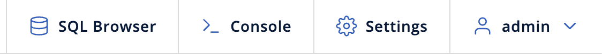
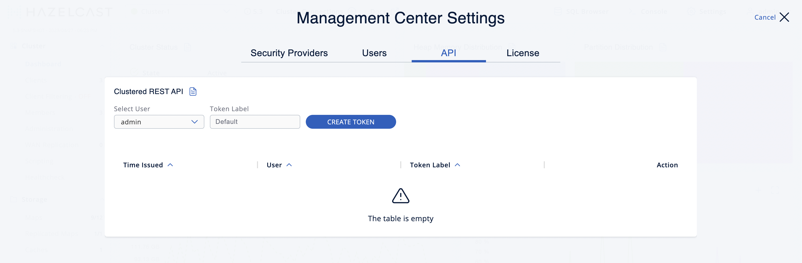
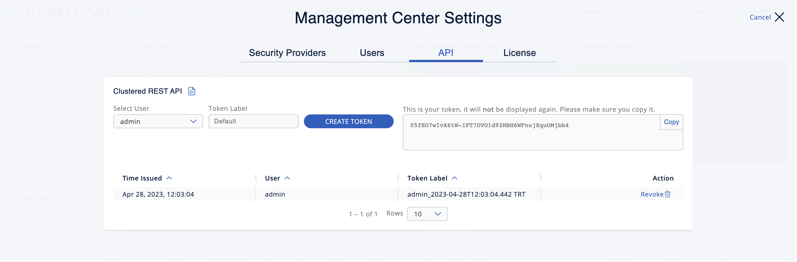

Clustered REST
The clustered REST API can be enabled to allow you to monitor clustered statistics of distributed objects through HTTP endpoints.
Enabling Clustered REST
The REST API is disabled by default.
To enable clustered REST in Management Center, use the
hazelcast.mc.rest.enabled property at startup.
Root Endpoint
The entry point for the clustered REST API is /rest. This
resource does not have any attributes.
Parameters
All parameters that are used in the REST endpoints, such as
cluster names and distributed data structure names, must be
URL encoded.
Such parameters are marked in braces ({ and }) in the URL description
for each endpoint. For example, name.with/special@chars
parameter value would be encoded as name.with%2Fspecial%40chars.
If no data can be found for an endpoint, that endpoint returns a 404 HTTP status code.
Authentication
Unless the security provider is set to dev mode, users need an authentication (auth) token to send requests to the REST API.
The auth token must be included in the following header:
-
Authorization: Bearer <user_auth_token>
Generating Auth Tokens
The way in which you generate an auth token depends on the security provider that you use. See Security Providers.
| All auth tokens inherit roles from the user. |
| Security Provider | Method for issuing tokens |
|---|---|
Local Security Provider |
Use the Send a Use Auth |
All other security providers other than dev mode |
Send a Use Auth |
Using api/tokens Endpoint
To use the /api/tokens endpoint for security providers except SAML and OIDC, run the following command. Replace the <username> and <password> placeholders with the credentials of a user logged in to the Management Center.
curl -u <username>:<password> -d '{"username":"<username>"}' -H "Content-Type: application/json" -X POST http://localhost:8080/api/tokensTo use the /api/tokens endpoint for SAML and OIDC, run the following command.
curl -d '{"username":"<username>"}' -H "X-CSRF-TOKEN: <x-csrf-token>" -H "Cookie: <cookie>" -H "Content-Type: application/json" -X POST http://localhost:8080/api/tokensHere, replace the <username> placeholders with the username of a user logged in to the Management Center, and replace the <x-csrf-token> and <cookie> with X-CSRF-TOKEN and Cookie headers. You can get the headers from any request on Network tab in Developer Tools when you are logged into Management Center:

Using hz-mc conf Tool
To use the hz-mc conf tool, do the following:
hz-mc conf user issue-token -n <username>mc-conf.bat user issue-token -n <username>The created token is displayed in the output:
Successfully issued a token for user 'test_user'.
Token: 'mJMMDfaSWZ1MuqhmGhA8m4erCNZtPi_A4_VyR_y8eH0'
Label: 'test_user_2021-07-07T17:24 EEST'Using Auth Token Management UI

-
Click Settings in the toolbar.

-
Navigate to the API tab.
-
Select the user that you want to create a token for. Only admin can create tokens for other users.
-
Enter the label of the token that you want to create. Default value has the
username_creationTimeformat. -
Click Create Token.
You will see the created token on the right side.

You can copy your token to the clipboard.
| The token will not be displayed again, so make sure you note it before leaving the page or creating a new one. |
You can see the list of existing tokens in the table, bottom of the page.

| Field | Description |
|---|---|
Time Issued |
Date and time when the token was created. |
User |
Username which the token is created for. |
Token Label |
Label of the token. |
Action |
Action for revoking a token. |